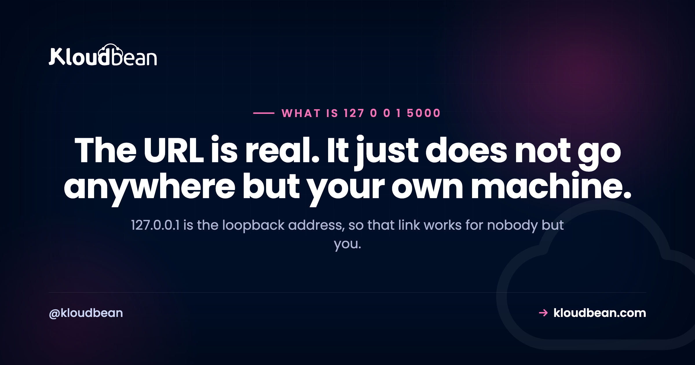

Running on http://127.0.0.1:5000: Why Only You Can Open It

Your terminal says Running on http://127.0.0.1:5000, you click it, and your app appears. So you paste the link into Slack and someone replies that it does not work. They are not doing anything wrong, and neither are you. That address is special: it means this computer, whichever computer is asking. When your colleague opens it, their browser dutifully looks on their own laptop, finds nothing on port 5000, and gives up. Understanding why takes about two minutes and saves a lot of confusion about what deploying actually involves.
127.0.0.1 is the loopback address, a reserved address that always means the machine you are on. Traffic sent there never reaches a network cable or a wifi radio. localhost is just a friendly name for the same thing. The :5000 is the port, which identifies which program on that machine should answer, and 5000 is the traditional default for Flask. So the URL is completely valid and completely private. Nobody else can open it, no matter what you do to your firewall, because their computer will resolve that address to itself.
Loopback means this machine, always
The whole 127.0.0.0/8 range is reserved for loopback, and 127.0.0.1 is the one everyone uses. Your operating system handles those packets internally and never puts them on a network interface. That is not a restriction someone configured. It is what the address is for.
Which produces the moment that brings most people to this page. You send the link. Your colleague sees one of three things:
- An error, because nothing on their machine is listening on that port. Usually a connection refused.
- Somebody else's app, if they happen to be running their own project on the same port. Genuinely confusing when it happens.
- Their own copy of the same project, if you are both working on it, which looks like it worked and then quietly diverges from what you meant to show them.
So the link is not broken. It is doing exactly what it says. It just says something different on every machine that reads it.
The port tells you what is running
Most people arrive here having copied one specific URL out of a terminal. The port is the informative part, because frameworks have conventional defaults, and knowing them tells you what you are looking at.
| Address you saw | What is almost certainly running |
|---|---|
127.0.0.1:5000 | Flask, its long-standing default |
127.0.0.1:8000 | Django's runserver, or Uvicorn serving FastAPI |
127.0.0.1:8000/docs | FastAPI's generated interactive API documentation, which it creates for you |
localhost:3000 | Node: Express, Next.js, or Create React App |
localhost:5173 | Vite, so a modern React, Vue, or Svelte front end |
localhost:8080 | A common alternative HTTP port. Tomcat, Spring Boot, and many others |
localhost/wordpress or localhost/index.php | A local PHP stack on port 80, typically XAMPP, MAMP, or Local |
redis://localhost:6379 | Redis. Not a web page, a connection string for your code |
mongodb://localhost:27017 | MongoDB, same idea |
localhost:5432 / localhost:3306 | PostgreSQL / MySQL |
An unfamiliar high port such as 127.0.0.1:18789 | A tool that picked a random free port, common for desktop apps and language servers |
Worth separating two things in that table. The top rows are URLs you open in a browser. The database rows are connection strings your application uses, and pasting one into a browser will not show you anything useful. They share the same localhost because the same rule applies: that database is on your machine and nowhere else, which is exactly why an app that works locally fails the moment you deploy it with the same connection string still pointing at localhost.
127.0.0.1, localhost, and 0.0.0.0 are three different things
These get used interchangeably and only two of them are the same. The third is the one that fixes your sharing problem, partly.
| Value | What it is | Use |
|---|---|---|
127.0.0.1 | The loopback IP address | A destination. This machine. |
localhost | A hostname that resolves to 127.0.0.1 | The same destination, easier to type. |
0.0.0.0 | Not a destination at all. A bind instruction meaning listen on every network interface | Server configuration. Never type it in a browser. |
That last row is the important one. By default most development servers bind only to loopback, which is a sensible security decision: your half-finished app is not exposed to the coffee shop wifi. Binding to 0.0.0.0 tells the server to accept connections arriving on any interface, which makes it reachable from other devices on your network.
# Flask
flask run --host=0.0.0.0
# Django
python manage.py runserver 0.0.0.0:8000
# Uvicorn, for FastAPI
uvicorn main:app --host 0.0.0.0 --port 8000
# Then reach it from another device using this machine's LAN address,
# which is not 127.0.0.1 and not 0.0.0.0:
ipconfig getifaddr en0 # macOS
hostname -I # most LinuxNow your phone on the same wifi can open http://192.168.1.42:5000 and see your app. This is genuinely useful for testing on a real device. It is still not hosting: the moment your laptop sleeps, or you leave the building, it is gone.
Ways people try to share a localhost link, ranked honestly
Send the URL. Cannot work, for the reason above. Not a configuration problem.
Send your LAN address. Works on the same network only, and needs the 0.0.0.0 bind above. Good for testing on your own phone, useless for a client in another city.
Use a tunnel like ngrok. This genuinely works, and it deserves credit for what it is good at: you get a public HTTPS URL in seconds, which is ideal for a quick demo or for receiving webhooks from a payment provider while you develop. Be clear on what it is not. Your laptop is still the server, so the URL dies when you close it, the free tiers hand you a different address each time, and every visitor's traffic travels through a third party to your development machine. For a demo, excellent. For anything anyone depends on, no.
Forward a port on your router. Technically possible and a bad idea. You would be exposing a development server, with no TLS and no process supervision, directly to the internet from your home network. The dev server is not built for that, which is the next section.
Deploy it. The actual answer, and less work than it sounds.
That warning in your terminal is not boilerplate
Alongside the address, Flask prints a warning that this is a development server and should not be used in a production deployment. People scroll past it. It is one of the more load-bearing warnings in web development.
A development server optimises for your convenience: it reloads when you save a file, shows you tracebacks in the browser, and takes no setup. Those are the right priorities while you are writing code and the wrong ones on a public URL. What it does not give you is the list that matters once real users arrive: no process supervision, so a crash stays down; no TLS, so no HTTPS; a single process by default, so one slow request can block others; and debug tracebacks that leak your file paths and code to anyone who triggers an error.
Production means a real application server in front. For Python that is Gunicorn or Uvicorn depending on whether your framework is synchronous or asynchronous, and the Gunicorn versus Uvicorn comparison covers which you want. Then a reverse proxy in front of that handling TLS and static files.
Port 5000 is already taken on a Mac
A specific and very common snag, worth naming because the error message points nowhere useful.
On macOS, the AirPlay Receiver feature listens on port 5000. Apple's own developer forums confirm that AirPlay has used port 5000 for many years, along with port 7000, and once your Mac can itself act as a receiver, that port is occupied before Flask starts. So Flask's traditional default collides with it out of the box, and you get an address-already-in-use error, or stranger symptoms like a blank page in Safari while other browsers work.
Two fixes. Either turn off AirPlay Receiver in System Settings, where it sits with the sharing and handoff options, or leave it alone and move your app. The Flask documentation covers the second approach:
# See what is holding the port
lsof -i tcp:5000
# Just use a different one
flask run --port 5001Generally the second is the better habit. Fighting the operating system for a port number is not a good use of an afternoon, and nothing about your app requires 5000.
lsof -i tcp:5000 on Linux or netstat -ano | findstr :5000 on Windows.
What deploying actually changes
Since the localhost URL is what most people are looking at when they first think about hosting, here is the honest shape of the gap. It is smaller than it looks.
| On your machine | On a server |
|---|---|
| 127.0.0.1, reachable by you | A domain name, reachable by anyone |
| The framework's dev server | Gunicorn, Uvicorn, or PM2 for Node, under supervision |
| HTTP | HTTPS with a certificate that renews itself |
| Dies when you close the laptop | Restarts itself if it crashes |
| A database on localhost | A managed database with backups, locked to your app server's IP |
Secrets in a local .env | Environment variables set on the server |
That fifth row catches the most people, and it follows directly from everything above. If your code contains postgresql://localhost:5432/mydb or redis://localhost:6379 and you deploy it unchanged, the app will look for a database on the server, find nothing, and fail. Same address, different machine, so it now means something else. Adding a managed database covers the connection-string side, and why an app works locally but not in production covers the rest of that category.
When you are ready for the mechanics, deploying a Flask app is the step-by-step for this exact stack, and how to deploy any app is the general version.
running on http on somebody else's machine
Nothing in this article needs a hosting provider. The loopback explanation is just how networking works, the 0.0.0.0 flag is free, and a tunnel will get you through a demo this afternoon.
It matters when you want the URL to keep working without you. On Kloudbean, Python is a first-class runtime with Flask, Django, and FastAPI supported, alongside Node, PHP, Ruby, and Java, so the app in your terminal has somewhere to go without being rewritten. Connect a Git repository and it builds and deploys on every push, with live build logs streaming in the console so a failed deploy is readable rather than mysterious. Runtime configuration for Python and Node is editable in the dashboard, which is where the environment variables replacing your local .env live. Managed databases across six engines give you a real connection string to replace the localhost one, and SSL is issued and renewed free, so the HTTPS row of that table takes care of itself. Seven cloud providers to pick from, and free migration assistance if something is already running elsewhere.
The boundary as always. The platform owns the server, the stack, TLS, backups and patching. Your application code stays yours, including remembering to change that connection string.
More on running on http
The natural next step for this stack is deploying a Flask app, or how to deploy any app if you are on something else. On the production server question, Gunicorn versus Uvicorn. For the localhost connection string problem, adding a managed database and environment variables done right. For the wider category of things that change on deployment, why my app works locally but not in production. On the layer that sits in front of your app once it is live, nginx as a reverse proxy. And when a Python import breaks on the server but not locally, ModuleNotFoundError.
Deploys that tell you what broke.
Build logs stream live in the console, deployment history keeps what happened, and the logs viewer separates app errors from web requests, so a failed start is a five-minute read rather than a guessing game.
- ✓ Live build logs
- ✓ Deployment history
- ✓ Logs viewer
- ✓ Managed process restarts
- ✓ Automatic backups
- ✓ Git deploy
Plans from $8/mo · Free migration assistance · Free trial
FAQ
What does http://127.0.0.1:5000 mean?
127.0.0.1 is the loopback address, which always refers to the machine making the request, and 5000 is the port identifying which program should answer. Traffic to that address never leaves your computer. Port 5000 is the traditional default for Flask, so seeing it usually means a Flask development server is running.
Why can nobody else open my 127.0.0.1 link?
Because on their computer that address means their computer. Their browser looks for something listening on port 5000 locally, finds nothing, and reports a connection error. It is not a firewall or permissions problem, and no setting on your machine can change it, because the address is resolved on theirs.
What is the difference between 127.0.0.1 and localhost?
Practically nothing. localhost is a hostname that resolves to 127.0.0.1, so both refer to the same loopback destination. The only differences you might notice are that localhost can resolve to the IPv6 loopback address on some systems, and that a hostname involves a resolution step that an IP address does not.
What is the difference between 127.0.0.1 and 0.0.0.0?
They are different kinds of thing. 127.0.0.1 is a destination meaning this machine. 0.0.0.0 is a bind instruction telling a server to accept connections on every network interface, which is what makes a development server reachable from other devices. You never type 0.0.0.0 into a browser as a destination.
How do I share my localhost app with someone else?
For someone on the same network, bind the server to 0.0.0.0 and give them your machine's LAN address. For someone elsewhere, a tunnelling tool like ngrok gives you a temporary public URL in seconds, which is fine for a demo but keeps your laptop as the server. For anything people will rely on, deploy it to a server.
Why is port 5000 already in use on my Mac?
Because macOS AirPlay Receiver listens on port 5000, so Flask's default port is occupied before your app starts. Apple's developer forums confirm AirPlay's long-standing use of ports 5000 and 7000. Either turn off AirPlay Receiver in System Settings alongside the sharing and handoff options, or run your app on another port with a flag such as flask run --port 5001.
Can I use the Flask development server in production?
No, and the warning it prints on startup is meant literally. It offers no process supervision, no TLS, is single-process by default, and its debug output can expose your file paths and code. Production needs a real application server such as Gunicorn or Uvicorn under supervision, with a reverse proxy in front handling HTTPS.
What is at 127.0.0.1:8000/docs?
That is FastAPI's automatically generated interactive API documentation, served alongside your application on the same port. Port 8000 is the usual default for both Uvicorn serving FastAPI and Django's development server, so if you see /docs there you are almost certainly running FastAPI.
Why does my app break when I deploy it if localhost worked fine?
Most often because a connection string still points at localhost. A value like redis://localhost:6379 or postgresql://localhost:5432 means whichever machine is running the code, so on the server it looks for a database on the server and finds nothing. Move those values into environment variables set per environment rather than hard-coding them.